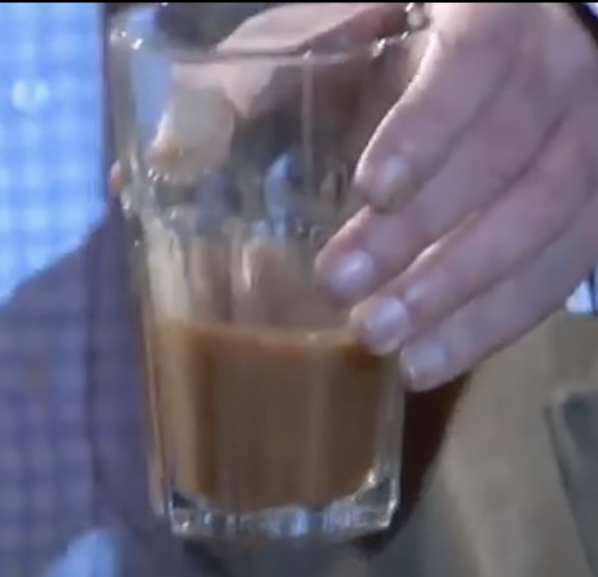

The Man's Smoothie

Description
This is the Man Smoothie. It is a quite refreshing beverage that'll put hair on your chest.
Best served with a side of Marlboro Reds or a pinch of Coppenhagen Wintergreen.
You will need a V8 engine blender but a more common Miata engine blender will work
Ingredients
- A T-bone steak with the bone
- A bottle of tobasco sauce
- One clay brick
- Two bottles of Washyoursistersauce
- Bovril, however much you'd like
Steps
- Add all the ingredients to the blender, no ingredient prep neccesary
- Blend between 6000 and 7000 RPM. If using a smaller engine,
you will need to double blend time by double for every two cylinders less than a V8
- Pour into pint glass and enjoy